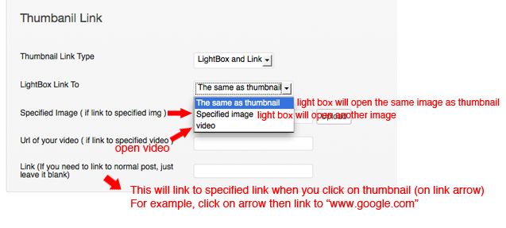
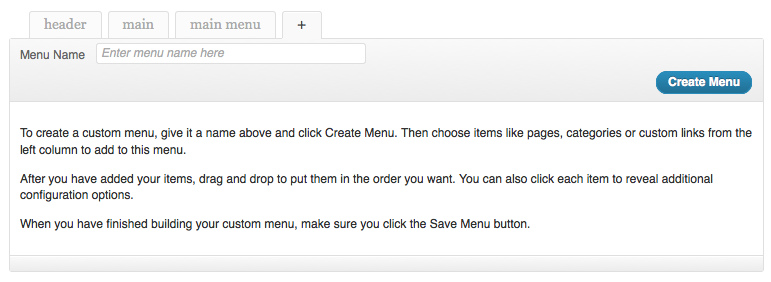
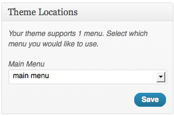
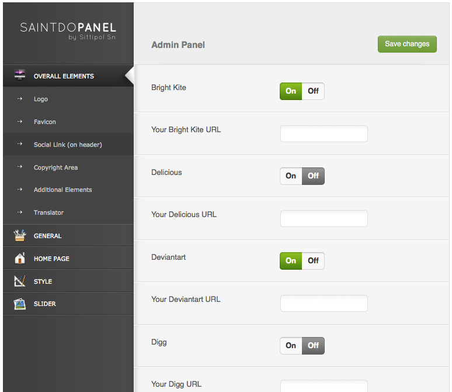
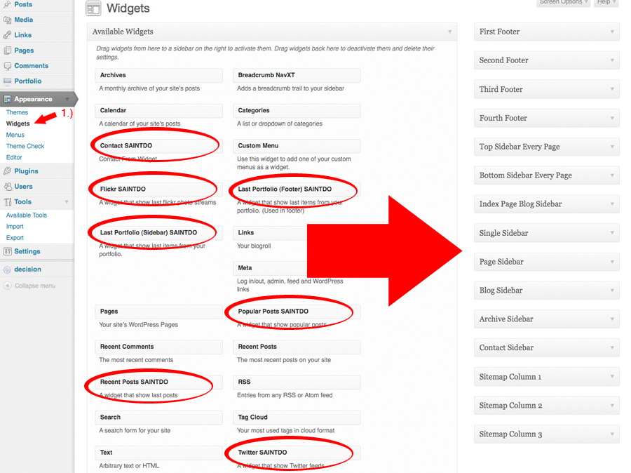

Contents
A.) Installation (top)
1.) Unzip the downloaded file.
2.) You will see a 7 folders(PSD,Document,365Life,demo......) inside.
3.) Copy folder '365Life' and paste in 'YOUR_DOMIAN/wp-content/themes'.
4.) Reay to go!
Plese make sure that your setting, "Reading" is set as "Your lastest posts"
B1.) Using image thumbnail (top)
There are two different thumbnail uploader.
1.) Thumbnail that appeared in portfolio layout or blog layout.
We use the uploader below.
2.) Thumbnail that appeared in post layout.
We use the uploader below.
{kind=link}
{kind=link}
{kind=link}
B2.) Using video thumbnail (top)
There are two different places for video thumbnail.
1.) Video Thumbnail that appeared in portfolio layout or blog layout.
We use the box below.
2.) Video Thumbnail that appeared in post layout.
We use the box below.
{kind=link}
{kind=link}
{kind=link}
B3.) Thumbnail link guide line (top)
In every 'portfolio post'. You'll be able to set 'thumbnail link type'.
There are 4 options for get thumbnail link to(see the image below).

And also you alble to set how lightbox act(see the image below).

B4.) Social network sharing (top)
1.) Go to '365Life admin panel'.
2.) Go to 'General > Social share'.
3.) Just enable or disable what you want to share.
4.) Go to the page you want to share. Scroll down untill you see 'Social Network Sharing'. Choose 'Yes'.
C1.) Logo (top)
1.) Go to '365Life admin panel'.
2.) Go to 'Overall Elements > Logo'.

3.) You can switch the logo and menu alignment, also be able to set the margin length.
C2.) Main Menu (top)
You can manage menu by going to
1.) Go to Apearance > Menu.

2.) Type menu's name.

3.) Click "Create Menu".
4.) Assign two menu area.

5.) Generate menu from left side to and drag to the right side.

C3.) Social Links (top)
You can enable or disble each one by going to
1.) Go to admin panel 'Overall elememnts > Social Link'.

2.) Enable or disable, also put url for each one.
D1.) Sidebars (top)
1.) Go to 'Appearance > Widgets'.
2.) Drag item on the left side to the right side.
D2.) Custome Widgets (top)
1.) Go to 'Appearance > Widgets'

2.) There are 6 custom widgets included in this theme. Drag those to right area.
*please note that, last portfolio (footer) used for footer area and last portfolio (sidebar) used for sidebar area.
D3.) Sidebar for pages (top)
1.) Go to specified page. Choose specified sidebar
2.) Go to 'appearance > widgets'. Use the widgets area 'page sidebar1', 'page sidebar2',..... etc.
Drag items from the main area to these widgets area.
E1.) Footer (top)
1.) Go to 'Appearance > Widgets'. You'll see footer widgets area on the right
2.) Drag item from left to 'Footer widget area'.
E2.) Copyright (top)
1.) Go to '365Life admin panel'
2.) Go to 'Overall Elements > Copyright Area'.
3.) Fill what you want.
F1.) Homepage (top)
This describe each components in HOMEPAGE
F 1.2) Last From portfolio (top)
Where is category? If you don't understand where it is, please learn more how to create portfolio.
F 1.3) Last From Blog (top)
Where is category? If you don't understand where it is, please learn more how to create blog.
F 1.4) Blog Featured (Full blog) (top)

Where is category? If you don't understand where it is, please learn more how to create blog.
F2.) Blog (top)
1.) Create new post and select the category. If you don't have any categories, just creat a new one.
2.) Create a new page. Choose page template as 'Blog' (There are 3 types of blog template).
3.) Scroll down until you see 'If you are using this page as Blog'. Then choose the category (that we just assigned to a post). And fill the amount of item that you want to be appeared in each page.
4.) If you want to create a thumbnail see this > Using thumbnail
F3.) Portfolio (top)

1.) Creat new portfolio post(in portfolio custom post type) and select the category(category name must not contain blank space!). If you don't have any categories, just creat a new one.
2.) Creat a new page. Choose page template as 'Portfolio' (There are 6 types of portfolio template).
3.) Scroll down untill you see 'If you are using this page as Portfolio'.
4.) Choose 'Link type of portfolio items' as 'post'.
5.) Choose 'Portfolio Category' as the one you just created.
6.) You can enable the filter portfolio.
7.) If you want to create a thumbnail see this > Using thumbnail
8 .) Thumbnail link guide line
Multi Level Portfolio Example
You need to understand clearly for steps above first.(one level portfolio)
Then you should see Portfolio Hierarchy to understand multilevel.
Or see video how to create multi level portfolio
Filterable Portfolio
See Portfolio Category Diagram
Or see video how to create filterable portfolio
{kind=link}
{kind=link}
F4.) Contact page (top)
1.) Create a new page.
2.) Select page template as 'Page - Contact'.
3.) Yoy need to manage 'contact sidebar' by going to 'Appearance > widgets'.
4.) on the right you will see 'Contact sidebar'. Just drag item from left to this widget area.
G1.) Color (top)
1.) Go to '365Life admin panel'. Go to 'Style > Color'.
2.) Choose color for each element.
3.) Save.
G4.) Fonts (top)
We provide 15 cufon + over 50 google fonts(@Fontface) for your alternative.
1.) Go to '365Life admin panel'. Go to 'Style > Font'.
2.) Choose font for each element.
3.) Save.
*please note that cufon recommened for English character only.
G2.) Theme Color (top)
1.) Go to '365Life admin panel'. Go to 'Style > Theme Color'.
2.) Choose elements color and theme style color.
3.) Note that, if you choose style as 'dark', you can't use black element. In other word, if you choose style as 'white', you can't use white element as well.
G3.) Background for inner page (top)
1.) Go to '365Life admin panel'. Go to 'Style > Background for inner page'.
2.) If this box is blank, bg will be black(or white, depend on theme style you choose).
3.) If if you choose bg option as 'No background' for inner pages. This will be used instead.
H.) Slider (top)
At this stage you can also setting the slider. There many options for you.
I.) Shortcodes List (top)
*** Must be a space bar between two shrtcodes, if you're using two shortcodes consequently.
ex. [column1_2]...[/column1_2]{space_bar}[column1_2]...[/column1_2]
You can see shortcode list online > http://themes.goodlayers.com/365Life/?page_id=273
J1.) Slider doesn't work (top)
Slider isn't working on your server? It's because of Timthumb(auto image resizer)
Try all of these:
The image must be hosted on your domain. This is for security reasons.
The folder 365Life/scripts/cache should have 777 permissions.
If this doesn't work, try giving 755 permissions to cache.
See here on how to give files and folders permissions (called CHMODing).
Make sure your server has the GD library for PHP enabled.
Ask your hosting provider, if you don't know what this means.
Make sure that you don't add www if your site doesn't use it. Go to http://www.yourdo- main.com .
If you are redirected to http://yourdomain.com , then don't add www. The reverse also applies.
If absolute image paths (http://domain.com/uploads/image.jpg) don't work, try using relative paths (/uploads/image.jpg)
If you try to resize a massive image (a few MB in size, for example), you will run into problems. try reducing the quality of the image.
If you are hosted with HostGator or if you are not sure what's wrong, ask your hosts; often, the mod_security settings play havoc with TimThumb. Your hosts will have to allow usage of TimThumb.
If you are using bitmap(.bmp) images and just changing the extension to .jpg. While this may seem like a great idea, a computer isn't so easily fooled.
You must change the extension correctly(eg by opening the image in Photoshop and saving it as JPG).
J2.) How to disable comment in page template (top)
1.) Go to your specified page (or post).
2.) Click 'Screen options' on the top. And check 'Discussion' box.
3.) Scroll down until you see 'Discussion' meta box. Uncheck allow comment
4.) Save.
K.) Restrictions (top)
1.) Portfolio category must NOT contain any blank spaces!
2.) If you use a custom permalink (something not like URL?p=22&paged=2....), You must NOT have a page name 'portfolio' because it'll duplicate to the custom post type name!
3.) You can't rename the theme folder!